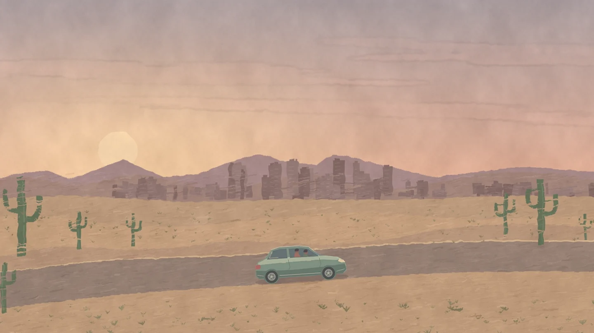
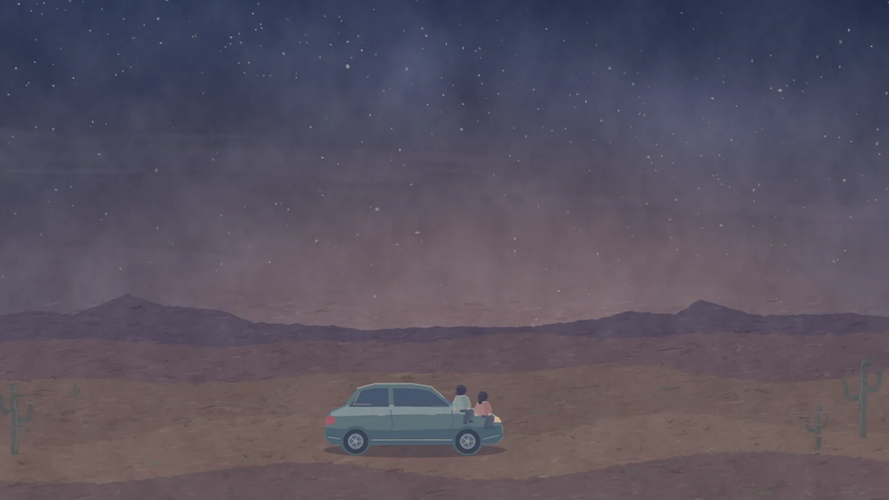

DESERT REVERIE

ARIZONA · UTAH · NEVADA
Phoenix, Arizona.
The starting point.
The starting point.
10 DAYS / 7 STOPS / 3 STATESFOLLOW THE ROAD
01 — 07 / THE ITINERARY
Seven stops.
Ten days.
Phoenix to Las Vegas.
Day split is a suggested pace.
PHXLAS
01PhoenixDAY 01
Saguaro silhouettes.
A sunrise start.
02SedonaDAYS 02–03
Red rock country.
Take the winding road.
03Grand CanyonDAY 04
Two people at the rim.
A canyon that keeps going.
04PageDAY 05 · ANTELOPE CANYON
05Bryce CanyonDAY 06
A thousand pink spires.
One quiet overlook.
06ZionDAYS 07–09
Cliffs overhead.
The Virgin River below.
07Las VegasDAY 10
City lights at dusk.
One last night beneath the stars.

THE LAST NIGHT
Las Vegas,
then the stars.